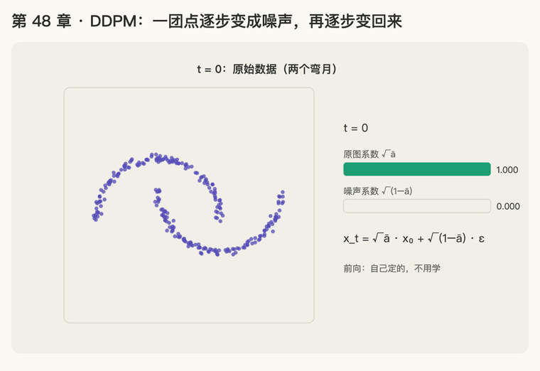

第 48 章 · DDPM：一步步加噪声，再学着一步步去噪
本地运行
git clone https://github.com/wikieden/beyond-transformer
cd beyond-transformer/code/notebooks
pip install jupyterlab torch numpy
jupyter lab ch48_ddpm.ipynb也可以下载后直接用 VS Code 打开 .ipynb 运行。需要 GPU 的章节在 Colab 里选「代码执行程序 → 更改运行时类型 → GPU」。
本章回答：生成一张图，为什么要先学"把图弄脏"？加噪声的那一路怎么一步跳到任意一步？神经网络到底在学什么，为什么是"猜加进去的噪声"？生成时从一团噪声出发，每一步怎么算，为什么要走 1000 步？
讲解日期：2026-11-18 · 上一章：第 47 章 MAE 与 DINO · 下一章：第 49 章 Latent Diffusion 与 Rectified Flow
对应原文：DDPMtransformer-deep-dive/materials/text/papers/ddpm-2006.11239.txt§2 L87–L118（式 2、3、4）、§3.2 L156–L230（式 11，\(\sigma_t^2 = \beta_t\) L159）、Algorithm 1、2 L192–L206、§3.4 式 14 L260–L310、§4 设置 L317–L326
本章缩写：DDPM = Denoising Diffusion Probabilistic Models（去噪 / 扩散 / 概率 / 模型）；diffusion（扩散：像墨水在水里散开）；Gaussian（高斯分布，也叫正态分布，钟形曲线）；\(\mathcal{N}(\mu, \sigma^2)\)：平均 μ（读作"缪"）、方差 σ²（σ 读作"西格玛"）的高斯分布；I = Identity（单位矩阵：每个数各自独立加噪）；β（beta，读作"贝塔"）：每一步加多少噪声；α = 1 − β；\(\bar\alpha_t\)（读作"alpha bar t"）：前 t 步的 α 连乘；ε（epsilon，读作"艾普西隆"）：标准高斯噪声；\(\epsilon_\theta\)：参数为 θ 的网络猜的噪声；T：总步数；U-Net（U 形网络：先缩小再放大、两边有跳线的卷积网络）；ODE = Ordinary Differential Equation（常微分方程，下一章用）。全部缩写见 附录 · 缩写与术语表
讲解
第一步：前向：每一步缩一点、加一点噪声（2026-11-18）
类比：一滴墨水在清水里散开。 散开很容易，每一秒自己就会散一点；1000 秒后整杯水是均匀的淡灰色，看不出原来那滴墨在哪。难的是倒着来：从一杯灰水里"收回"一滴墨。DDPM 的思路是：散开的过程我们自己定，倒着收回的过程让神经网络学。
先补一个概念：高斯噪声。 \(\epsilon \sim \mathcal{N}(0, 1)\) 读作"ε 服从平均 0、方差 1 的高斯分布"：随机抽一个数，大多落在 −2 到 2 之间，越靠近 0 越常见（钟形曲线）。一张图每个像素各抽一个，就是一张"雪花噪声图"。
前向过程（forward process，式 2，L98–L101）：
换成"怎么算"的写法：
| 符号 | 读法 | 意思 |
|---|---|---|
| \(x_0\) | x 零 | 原图（像素缩放到 −1 到 1） |
| \(x_t\) | x t | 加了 t 步噪声后的图 |
| \(\beta_t\) | 贝塔 t | 第 t 步加多少噪声，很小（论文从 0.0001 线性涨到 0.02，L318–L319） |
| \(\sqrt{1-\beta_t}\) | 先把原来的图缩一点 | |
| \(\sqrt{\beta_t}\,\epsilon\) | 再加一点新噪声 |
为什么要先缩：如果 x 的方差是 1，缩成 \(\sqrt{1-\beta}\) 倍后方差变成 1 − β，加上方差 β 的噪声，加起来还是 1。这样走 1000 步，数值不会越加越大，最后正好变成 \(\mathcal{N}(0, 1)\)。
数字演示（一个像素，编的大一点的 β 好算）：\(x_0\) = 0.8，\(\beta_1\) = 0.01、\(\beta_2\) = 0.02；抽到 \(\epsilon_1\) = 1.0、\(\epsilon_2\) = −1.0：
| 步 | 算式 | 结果 |
|---|---|---|
| \(x_1\) | \(\sqrt{0.99} \times 0.8 + \sqrt{0.01} \times 1.0\) = 0.796 + 0.1 | 0.896 |
| \(x_2\) | \(\sqrt{0.98} \times 0.896 + \sqrt{0.02} \times (-1.0)\) = 0.887 − 0.141 | 0.746 |
一句话：前向过程每一步把图缩一点（\(\sqrt{1-\beta_t}\)），再加一点高斯噪声（\(\sqrt{\beta_t}\,\epsilon\)），走 T 步后变成纯噪声；这一路不用学。
第二步：一步跳到第 t 步：\(\bar\alpha_t\)（2026-11-18）
训练时要第 500 步的样子，总不能真加 500 次。原文给了直接跳的公式（式 4，L115–L118）：
| 符号 | 意思 |
|---|---|
| \(\alpha_t\) | 第 t 步保留多少（1 − β） |
| \(\bar\alpha_t\) | 前 t 步保留比例连乘起来：原图还剩多少 |
| \(\sqrt{\bar\alpha_t}\) | 原图的系数，从 1 一路降到接近 0 |
| \(\sqrt{1-\bar\alpha_t}\) | 噪声的系数，从 0 一路升到接近 1 |
为什么能跳：每一步的噪声都是独立的高斯，几个高斯加起来还是一个高斯，方差相加。所以 t 步的噪声可以合并成一次。
验证（接第一步）：\(\bar\alpha_2\) = 0.99 × 0.98 = 0.9702。一步跳到 t = 2：原图系数 \(\sqrt{0.9702}\) = 0.985，0.985 × 0.8 = 0.788；噪声系数 \(\sqrt{0.0298}\) = 0.173。第一步那条路走出来是 0.746，等于这里的 ε 抽到了 −0.243：同一个分布，只是抽到的随机数不同。
论文的设置（T = 1000，β 从 \(10^{-4}\) 线性涨到 0.02）：
| t | \(\bar\alpha_t\) | 原图系数 \(\sqrt{\bar\alpha_t}\) | 噪声系数 \(\sqrt{1-\bar\alpha_t}\) |
|---|---|---|---|
| 1 | 0.9999 | 0.9999 | 0.01 |
| 100 | 0.897 | 0.947 | 0.321 |
| 250 | 0.524 | 0.724 | 0.690 |
| 500 | 0.079 | 0.280 | 0.960 |
| 750 | 0.0034 | 0.058 | 0.998 |
| 1000 | 0.00004 | 0.006 | 1.000 |
到第 1000 步，原图只剩 0.6%，几乎就是纯噪声。
一句话：\(\bar\alpha_t\) 是前 t 步保留比例的连乘，\(x_t = \sqrt{\bar\alpha_t}\,x_0 + \sqrt{1-\bar\alpha_t}\,\epsilon\) 一步就能造出任意一步的脏图。
第三步：训练：让网络猜"加进去的是哪团噪声"（2026-11-18）
类比：修复老照片的学徒。 师傅拿一张好照片，故意弄脏到某个程度，问学徒"我刚才撒的是哪些灰"。学徒每次都能对答案，因为脏是师傅亲手弄的。
Algorithm 1（L192–L199）：
- 从训练集取一张图 \(x_0\)；
- 随机挑一步 t（1 到 1000 均匀抽）；
- 抽一团噪声 ε；
- 用式 4 造出 \(x_t\)；
- 网络 \(\epsilon_\theta(x_t, t)\) 看着脏图和步数 t，猜噪声；
- 用均方误差（第 47 章）更新：
这是式 14（L300）。\(\mathbb{E}\) 读作"期望"，就是"对随机抽的 t、图、噪声取平均"。
为什么猜噪声而不直接猜原图：两者知道一个就能算出另一个（式 4 移项）。原文推导出：真正的目标（式 3，−log p 的上界，和第 1 章的 NLL 是一家）化简后，就是加权的"噪声猜得准不准"；去掉权重后效果反而最好（L260–L310）。
数字演示：\(x_0\) = 0.8，抽到 t = 500、ε = −0.5：
- \(x_{500}\) = 0.280 × 0.8 + 0.960 × (−0.5) = 0.224 − 0.480 = −0.256；
- 网络猜 \(\epsilon_\theta\) = −0.4；
- loss = (−0.5 − (−0.4))² = 0.01。
用猜的噪声反推原图：\(\hat x_0 = (x_t - \sqrt{1-\bar\alpha_t}\,\epsilon_\theta)/\sqrt{\bar\alpha_t}\) = (−0.256 + 0.960 × 0.4) / 0.280 ≈ 0.458（真实是 0.8）。噪声只猜错 0.1，原图就差了 0.34：噪声大的时候，一步猜原图很不准，所以生成时要一小步一小步地走。
一句话：训练时随机挑一步、随机加一团噪声，让网络看着脏图和步数猜出这团噪声，loss 是均方误差。
第四步：生成：从纯噪声出发，一步步减掉猜出的噪声（2026-11-18）
Algorithm 2（L192–L206）：
- 抽一张纯噪声 \(x_T \sim \mathcal{N}(0, I)\)；
- 从 t = T 倒着走到 1，每一步：
- 输出 \(x_0\)。
| 部分 | 意思 |
|---|---|
| \(\frac{\beta_t}{\sqrt{1-\bar\alpha_t}}\,\epsilon_\theta\) | 减掉一小部分猜出的噪声（不是全部减掉） |
| \(\frac{1}{\sqrt{\alpha_t}}\) | 把前向时"缩的那一点"放大回来 |
| \(\sigma_t z\) | 再加一点新的随机噪声，\(\sigma_t^2 = \beta_t\)（L159）；最后一步 t = 1 不加 |
括号里那部分就是式 11 的平均值 \(\mu_\theta\)（L211）。
数字演示：接第三步，t = 500：\(\alpha_{500}\) = 0.98996，\(\beta_{500}\) = 0.01004；
- 减噪声的系数：0.01004 / 0.960 = 0.01046；
- 括号里：−0.256 − 0.01046 × (−0.4) = −0.256 + 0.0042 = −0.2514；
- 除以 \(\sqrt{0.98996}\) = 0.99497：−0.2528；
- 再加 \(\sigma_{500} z\)，\(\sigma_{500} = \sqrt{0.01004} \approx 0.100\)；为了看清楚，这里 z 取 0。
一步只挪了 0.003：每一步只去掉很少的噪声，所以要走 1000 步，要跑 1000 次网络。这就是 DDPM 生成慢的原因，下一章的两个办法都在解决它。
一句话：生成时从纯噪声出发，每一步减掉一小部分网络猜出的噪声、放大回来、再撒一点新噪声，走 1000 步得到图。
第五步：网络长什么样：U-Net + 时间步编码（2026-11-18）
\(\epsilon_\theta(x_t, t)\) 的输入是一张图、输出是同样大小的一张图（每个像素一个噪声值）。DDPM 用的是 U-Net（L323–L326）：
- 先一层层缩小（看大局），再一层层放大（恢复细节），同尺寸的两边用跳线连起来；
- 在 16 × 16 那一层加了自注意力；
- 步数 t 怎么告诉网络：用前作第 14 章 Transformer 的 sin / cos 位置编码，把整数 t 变成一串数加进网络。所有 t 共用一套参数，网络靠这串数知道"现在有多脏"。
和本书的关系：
| 本章 DDPM | 第 50 章 DiT | |
|---|---|---|
| 主干 | U-Net（卷积 + 少量注意力） | Transformer（第 44 章的切小块） |
| 时间步 t | sin / cos 编码加进去 | 编码后去调 LayerNorm 的缩放和平移 |
一句话：猜噪声的网络是输入输出同尺寸的 U-Net，步数 t 用 Transformer 的 sin / cos 编码告诉它，所有步共用一套参数。
动画演示：一团点逐步变成噪声，再逐步变回来

可交互版：animations/48-ddpm.html（需要用本地服务打开，见 animations/README.md"跑起来看"；滑块：步数 t 从 0 拖到 1000，看点云散开的程度和两个系数 \(\sqrt{\bar\alpha_t}\)、\(\sqrt{1-\bar\alpha_t}\)）。
怎么看：
- 一团二维的点（"数据"是两个弯月形，编的）按式 4 加噪，t = 100、250、500、1000 越来越散，最后变成一团圆形的噪声（第一、二步）；
- 从纯噪声出发按 Algorithm 2 倒着走，点又聚回两个弯月（第四步）。这里的"网络"用的是对这组点精确算出来的去噪器，代替训练好的 U-Net；
- 滑块：看原图系数和噪声系数怎么此消彼长。
练习与作答记录
题 1（第一步）：\(x_0\) = 0.5，β = 0.04，抽到 ε = 1。算 \(x_1\)。
题 2（第二步）：\(\beta_1\) = 0.1、\(\beta_2\) = 0.2。（a）\(\bar\alpha_2\) 是多少？（b）\(x_0\) = 1、ε = 0.5，一步跳到 t = 2，\(x_2\) 是多少？（提示：\(\sqrt{0.72} \approx 0.849\)，\(\sqrt{0.28} \approx 0.529\)）
题 3（第三步）：（a）训练时 t 为什么要随机挑，而不是每次都从 1 走到 1000？（b）为什么说"猜噪声"和"猜原图"其实是一回事？
题 4（第四、五步）：（a）DDPM 生成一张图要调用多少次网络？（b）所有步共用一个网络，网络怎么知道现在是第几步？
口诀
墨水入水散得快，倒着收回要靠学。
每步先缩再加噪，方差守住还是一。
阿尔法连乘一步跳，原图系数降、噪声升。
随机挑步撒噪声，网络专猜撒了啥。
生成从噪声倒着走，每步减一点、再撒一点，一千步才成图。
本章复习卡片
必背：B12–B13（B12 前向过程与式 4；B13 训练猜噪声与生成的一步）。练习做完后，按答错、卡住的地方再补。
附录 · 延伸阅读
留给以后深入学习用，不影响本章主线。★ 是建议先读的。
推荐阅读
| 读什么 | 读哪里 | 读它为了什么 |
|---|---|---|
| ★ Denoising Diffusion Probabilistic Models（DDPM，Ho 等 2020） | §2 L87–L118；§3.2 L156–L230；Algorithm 1、2 L192–L206；§3.4 L260–L310；§4 L317–L326 | 本章原文 |
| Lilian Weng，What are Diffusion Models?（博客，2021） | 全文 | 从式 2 到式 14 的完整推导，配图清楚 |
| DDIM（Song 等 2020） | 全文（本地没有文本版） | 不改训练、只改生成：几十步就能出图 |
| Score-Based Generative Modeling through SDEs（Song 等 2021） | 全文（本地没有文本版） | 把加噪看成连续时间的随机微分方程，统一 DDPM 和打分模型 |
| 本书第 49、50 章 | 少走几步的办法（Rectified Flow）、换 Transformer 主干（DiT） |
数学原理
- 高斯相加：独立的 \(\mathcal{N}(0, a)\) 和 \(\mathcal{N}(0, b)\) 相加是 \(\mathcal{N}(0, a+b)\)，所以多步噪声能合成一步（式 4）。
- 方差守恒：\(\text{Var}(\sqrt{1-\beta}x + \sqrt\beta\epsilon) = (1-\beta)\text{Var}(x) + \beta\)；Var(x) = 1 时结果还是 1。
- 变分下界：\(-\log p_\theta(x_0) \le L\)（式 3），训练让上界变小，等于让 NLL 变小；化简后每一项都是"猜噪声的平方误差"乘一个权重，DDPM 把权重扔掉得到 \(L_{\text{simple}}\)。
- 重参数化：\(\hat x_0 = (x_t - \sqrt{1-\bar\alpha_t}\,\epsilon_\theta)/\sqrt{\bar\alpha_t}\)。
公式清单
| 公式 | 意思 |
|---|---|
| \(x_t = \sqrt{1-\beta_t}\,x_{t-1} + \sqrt{\beta_t}\,\epsilon\) | 前向一步（式 2） |
| \(\bar\alpha_t = \prod_{s=1}^{t}(1-\beta_s)\) | 前 t 步保留比例连乘 |
| \(x_t = \sqrt{\bar\alpha_t}\,x_0 + \sqrt{1-\bar\alpha_t}\,\epsilon\) | 一步跳到第 t 步（式 4） |
| \(L_{\text{simple}} = \mathbb{E}\lVert \epsilon - \epsilon_\theta(x_t, t)\rVert^2\) | 训练目标（式 14） |
| \(x_{t-1} = \frac{1}{\sqrt{\alpha_t}}\big(x_t - \frac{\beta_t}{\sqrt{1-\bar\alpha_t}}\epsilon_\theta\big) + \sigma_t z\) | 生成的一步（Algorithm 2） |
代码对照：把本章的数字用代码算一遍
NumPy。代码在仓库本地
beyond-transformer/solutions/chapter-code/ch48_ddpm.py，配套测试tests/test_ch48.py，notebook 在notebooks/ch48_ddpm.ipynb：
bash cd beyond-transformer/solutions/chapter-code uv run python ch48_ddpm.py uv run pytest tests/test_ch48.py
讲义 ↔ 代码：
| 讲义 | 公式 | 写法 | 跑出来 |
|---|---|---|---|
| 第一步 前向两步 | 式 2 | forward_step(x, beta, eps) |
0.8 → 0.896 → 0.746 |
| 第二步 一步跳 | 式 4 | schedule()、jump(x0, t, eps) |
\(\bar\alpha_2\) = 0.9702；t = 500 时系数 0.280、0.960 |
| 第三步 训练 | 式 14 | train_example(0.8, 500, -0.5, -0.4) |
\(x_{500}\) = −0.256，loss = 0.01，\(\hat x_0\) ≈ 0.458 |
| 第四步 生成一步 | Algorithm 2 | reverse_step(xt, 500, eps_hat, z=0) |
−0.2528 |
关键几行：
betas = np.linspace(1e-4, 0.02, 1000) # 论文的 β：线性从 0.0001 到 0.02
alpha_bar = np.cumprod(1 - betas) # ᾱ_t：前 t 步的 α 连乘
x_t = np.sqrt(ab) * x0 + np.sqrt(1 - ab) * eps # 式 4：一步跳到第 t 步
loss = (eps - eps_hat) ** 2 # 式 14：猜噪声的平方误差
mean = (x_t - beta / np.sqrt(1 - ab) * eps_hat) / np.sqrt(alpha) # 生成：减一点噪声、放大回来
代码里才看得到的 2 件事：
- 论文的 t 从 1 数到 1000，数组下标从 0 数，所以第 t 步是
betas[t - 1]。 np.cumprod一次算出全部 1000 个 \(\bar\alpha_t\)，训练时直接查表，不用真的加 t 次噪声。
自己改一改（不影响练习答案）：
- 把 β 的上限从 0.02 改成 0.01，看第 1000 步的原图系数是不是还接近 0。
- 在
reverse_step里把 z 改成 1，看随机项让结果挪了多少。